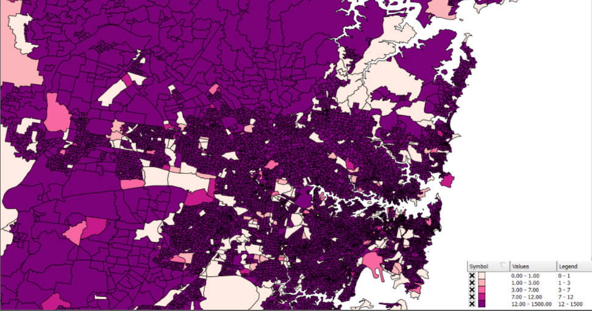

Indigenous Population Growth and Distribution in NSW
STORY
The Australian census is conducted every five years and asks citizens if they are of Aboriginal and/or Torres Strait Islander origin.
In the past, this question was used to exclude people of indigenous origin from the official census population statistics of Australia. Back then indigenous people were not recognised as Australian citizens.
However, after the 1967 referendum indigenous people were counted in the official population statistics of Australia and the question on indigenous origin gave information to the government on the number of indigenous people and their distribution over Australia. This time was also important as once indigenous citizens were seen as official citizens, the commonwealth then had the opportunity to make laws to protect indigenous people.
POPULATION GROWTH AND DISTRIBUTION IN NSW
Total population of indigenous Australians in 2011 (map):

Total population of indigenous Australians in 2016 (map):

The maps above refer to the number of indigenous people in NSW. The map on the left-hand side refers to data gathered by the 2011 census, and the map on the right-hand side refers to the 2016 census.
Legend for total population of indigenous Australians in 2011 and 2016

The two maps share the same ‘legend’ and the colour variation of white to orange to a crimson describes the indigenous population count. The darker the hue, the higher the number of indigenous people live in that area.
POPULATION DISTRIBUTION
During the colonisation of Australia, we saw the decrease of indigenous people living on the coast of NSW. This was largely due to smallpox and other diseases, but also the forceful removal from British soldier.
However, looking at the 2011 (left) and 2016 (right) map, we can see the gradual movement back towards the coast again.
In 2011, the indigenous population was already highly concentrated in coastal NSW especially the city of Sydney and Wollongong and has continued to grow by 2016. The places where the indigenous population has declined are located in inner NSW, in areas with small rural populations.
The population growth was not evenly distributed and is migrating towards more urban areas. This trend could symbolise:
- A greater support for the indigenous community in urban areas especially in high concentrated areas like Sydney etc
- Could be the way data for the census is collected and distributed. Some Indigenous groups and communities believe that the way the census is carried out disadvantages them.
POPULATION GROWTH
The indigenous population in NSW was once.... but is now growing at a rapid rate.
There are several possible reasons for the rapidly growing visibility of Indigenous Australians in our population statistics.
Firstly, indigenous Australians have a higher number of children on average than non-indigenous Australians (ABS). The highest number of people in an age category for indigenous people was 0-4yrs of age in both 2011 (21,405 people) and 2016 (22,106 people). This comes from my data excel sheet which categorised ages into 14 groups: 0-4yrs, 5-9yrs, 10-14yrs, 15-19yrs, 20-24yrs, 25-29yrs, 30-34yrs, 35-39yrs, 40-44yrs, 45-49yrs, 50-54yrs, 55-59yrs, 60-64yrs, and 65+yrs.
The percentage of indigenous people in the 0-4 age category account for 14.16% of the whole indigenous population in NSW (in 2011). And although it has declined to 13.16% in 2016, it is still very high compared to non-indigenous which was 6.63% (in 2011) and 6.22% (in 2016). The largest number of people in an age category for non-indigenous was 35-39 years (488,126 people) in 2011 and 30-34 years (540,177 people) in 2016.
Secondly, children resulting from relationships between indigenous and non-indigenous often identify as indigenous
Thirdly, some of the reasons for increased population growth could be due to a lack of visibility. For example, the way in which the census has been conducted in the past and the higher number of indigenous Australians living in inner Australia could have resulted in a lower number of indigenous Australians filling in the census.
Despite the lack of finite reasons for the growing indigenous population growth rate it is important to note that New South Wales has the biggest number of indigenous people than all the other states and territories in Australia (ABS). Therefore it is data on indigenous in NSW is very important.
Additionally, research needs to be done on the support services for aging indigenous Australians. Non-indigenous Australians aged 65 and over increased from 14.72% in 2011 to 16.28% in 2016. This is a very high number of the population that is old and the long livelihoods of non-indigenous people suggest there is some support for an aging population. However, only 4.84% of the indigenous population was 65 years and older in 2011 and this decreased to 4.70% in 2016. This could be the result of a lack of support for indigenous people in terms of access to government funds or a lower socioeconomic rate than non-indigenous Australians.
Total population of indigenous Australians over 65 in 2011
Total population of non-indigenous Australians over 65 in 2011
From: Screenshot from QGIS
Total population of indigenous Australians over 65 in 2016
Total population of non-indigenous Australians over 65 in 2016

Legend for 65 year olds and over for indigenous and non-indigenous population in 2011 and 2016

MY DATA
My data came from the ABS census website. My data topic was "Indigenous Status by Age by Sex" (G07) from the 2016 Census Data Pack on Population and Housing. It focuses on the number of individuals in NSW who identified as Indigenous (Aboriginal and/or Torres Strait Islander origin), non-indigenous and not-stated.
I also incorporated the previous data on “Indigenous Status by Age by Sex” (B07) from the 2011 census, to see the direction of growth and geographical distribution of the population over time.
SUMMARY
Despite the mass of data collected by the Australian census, only my G07 data set provided a section on Indigenous (Aboriginal and/or Torres Strait Islander origin) population. Majority of the data collected by the census splits into age or gender, rather than ethnicity. Therefore my story had to focus on the population growth and distribution of Indigenous people in NSW, rather then education or socioeconomic rates for indigenous people.
The ABS website gives statistics and more detail into the lives of indigenous Australians; eg. Education rates and income growth. But the lack of an indigenous column within most of the data packs (except G07) does not show figures specifically on the indigenous population. Therefore, it is hard to flesh out a story on the population of indigenous Australians and the future direction for them, if the only data comes from the ABS.
Despite the challenges with the census data, the question on indigenous status(in the census) brings awareness of the location and geographical spread of the indigenous population. In particular, understanding the gap between non-indigenous and indigenous Australians. This information has the power to influence future policymaking for indigenous Australians and create a more even distribution between the indigenous and non-indigenous in the future.
The migration of the indigenous population towards more urban areas enhances the possibility of access to support services and this can be supported by the rapidly growing population. There needs to be better organisation of the census data to fully understand the reasons behind the changes in the indigenous population, but the data above paints a relatively positive picture of for the future of indigenous.